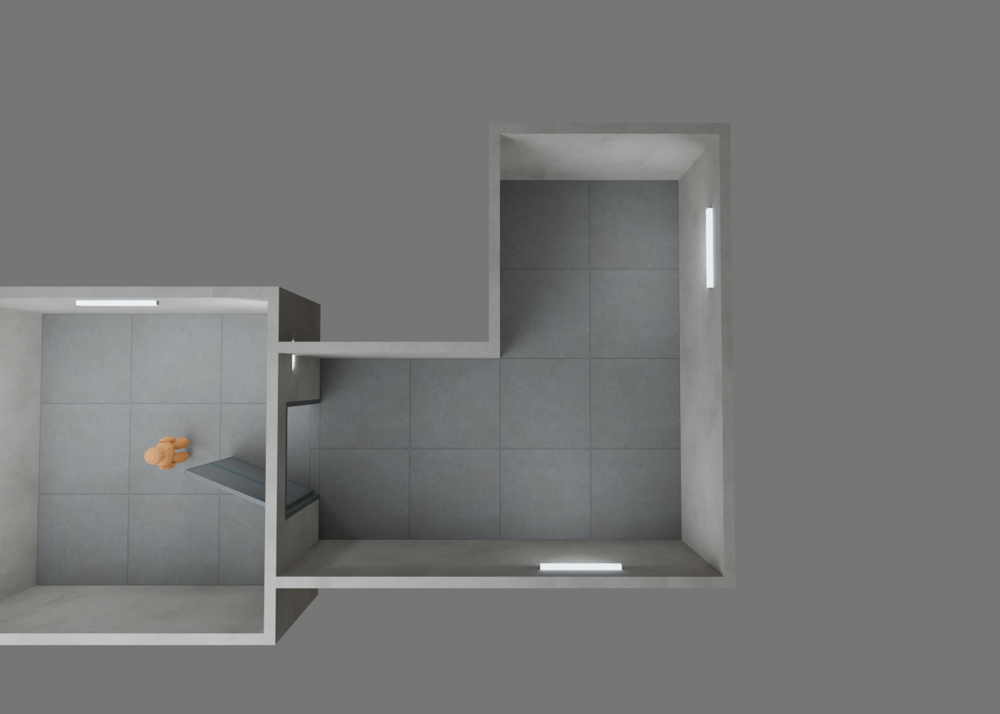
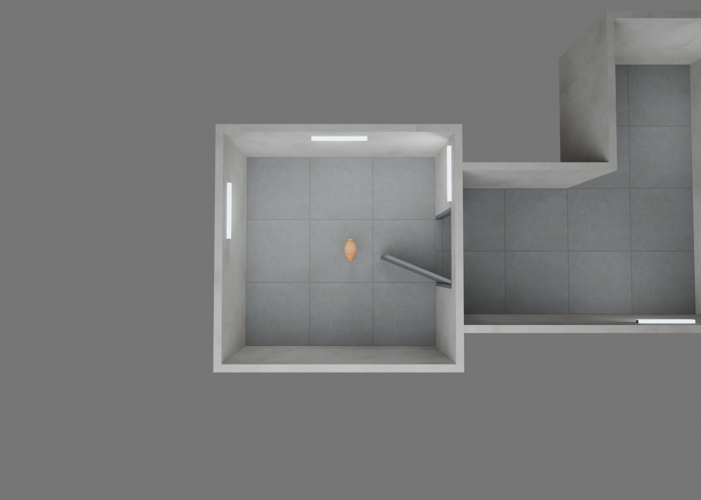

모듈러 산업시설 · 천장 없는 6종
6×6m 방 + 유효 폭 4m L자 복도 · 높이 3m · 문 2×2.4m
고유 160삼각형 / 55개 배치 804삼각형 · 공유 아틀라스 2K + 오염 마스크 1K
재질 3안 — 같은 모델
추가 오염 양
깨끗함은 추가 오염이 꺼진 상태이며, 아틀라스의 기본 마모는 남습니다. 강도 0 / 0.65 / 1.8.
프로젝트 탑다운 카메라
Pitch −88° · Arm 1500cm · FOV 70° · 북쪽 +X가 화면 위 · 천장과 보 제거

복도 탑다운

UE 에디터 · 같은 카메라
실제 프로젝트 카메라 설정을 적용한 에디터 캡처입니다. PIE 플레이 화면은 아닙니다.
FBX 재로드

UE 캡처로 표시한 2장을 제외한 이미지는 외양 검토용 Blender 렌더입니다. FPS 측정 또는 UE 실시간 조명 성능 검증 이미지는 아닙니다.
조립 안내 · 성능 수치 · 재현 방법